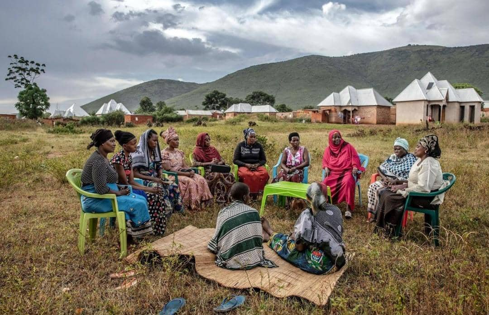

Business & Skills
Shimu Women Business Fund
A flagship initiative combining capital with training, mentorship and market access — with priority areas spanning food processing, agriculture, tailoring, retail, catering and mining-supply businesses.